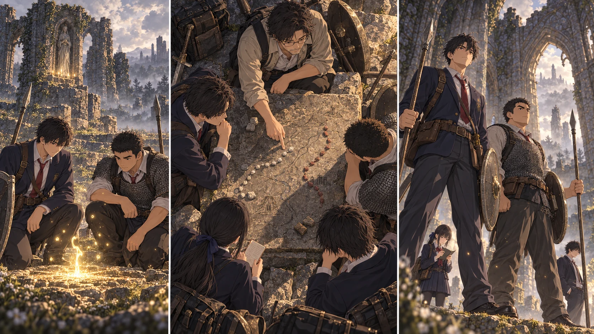

最新の本編へTURN1−44 · 二つの道と、帰る場所。

【DAY31・06:10／朝霧の教会】
赤い月は沈んだ。教会の外には霧が溜まり、昨日まで見えていた木の根元が白く隠れている。先生は石板の地図に二つの小石を置いた。自分一人で先へ行く道と、全員が動ける道。それを同じものとして扱うのを、やめる。
直人は地図より先に、隣の大地を見た。「俺が、A隊の前を支える」
大地は少し考えた。「俺はもう一組だな。ただ、分からない相手まで受け切るとは言えないぞ」
「それでいい」と蓮が答える。「見つけたものを持って帰ってきてくれれば、次は人数を集められる」
大地はそこで、ようやく頷いた。
【祝福での育成／共同ルーン600】
先生が認めた配分を澪が読み上げる。直人に三百、大地に三百。二人は祝福の側に膝をついた。生命力と持久力を五つずつ。盾も体も突然大きくはならない。立ち上がった直人は、いつもの盾を持ち直し、呼吸を確かめた。大地は鎖帷子の重みを肩で受け、短く息を吐いた。二人とも、レベル二十。
「急に何でもできる気はしないな」
大地が言うと、直人が槍先を下げた。「でも、持って帰る余裕は増えた」
二人は教会の中で、前へ出る位置と下がる位置を確かめた。今日は新しい技の試験ではない。既に使ってきた槍と盾を、少し余裕のある身体で扱い直す。
【先生一人と、六人ずつの育成隊】
先生は先の地図を調べ、生徒の二隊は、まず全員がレベル二十に届くことを目指す。A隊は直人と陽太が前を支え、陸が先を見て、花と悠が遠距離、紬が防護。紬の祈りは治療の代わりではない。各自の赤い聖杯瓶と帰路を確認する。先生のトレント借用はまだで、軍馬も乗れる状態ではない。
【探索B隊／大地と蓮】
大地と健太が前後を支え、蓮が観察と進退をまとめる。千夏の弓、拓海の魔術、葵の手当て。葵が先に口を挟んだ。「大丈夫かどうかは、戻ってからだけ聞くんじゃ遅いからね」
大地は「分かってる」と言いかけて、言い直した。「痛くなったら言う」
結衣は三つ目の小石を教会の印へ戻した。「私はここ。誰がどこへ行って、何時までに帰るかを残してもらいます」
基地側は二十人。隼人たちの守備を残しながら、食料と水を運ぶ手間を減らす。川沿いの候補地、狩場、運ぶ容器。全部を一度に解決したことにはせず、調べたものから手をつける。颯は休養を続け、指笛も本人の手元だ。花が探索に出る間の軍馬の見守りは、美咲と澪が引き継ぐ。
【地図の線は、まだ道になっていない】
主街道の先、湖の岸、割符の手掛かり。先生の記憶にある場所は点線で結び、実際に歩いた線とは分けた。アギール湖北には、触れていない祝福の印を残す。そこは野営地が完成した場所ではなく、もしもの時に皆を戻すための予備だ。
「ボスがいたら？」と千夏が聞いた。
蓮は敵の印から少し離れた場所に、小石を置いた。「見えるところまでで帰る。集まるのは敵の足元じゃない。退ける場所を決めて、必要な人数を連れてくる」
結衣が頷く。「ここの守りまで空にしない。探索の報告を見て、出せる人数を決める」
【06:40／次の八日のために】
先生一人、六人ずつの育成隊、帰る場所を守る二十人。名前を書き分け、城を目指す線は点線のままにした。ルーンは七百五。矢は百四十一。教会の外の霧はまだ濃い。遠くへ進むために、まず今日の出発と帰還を決める。